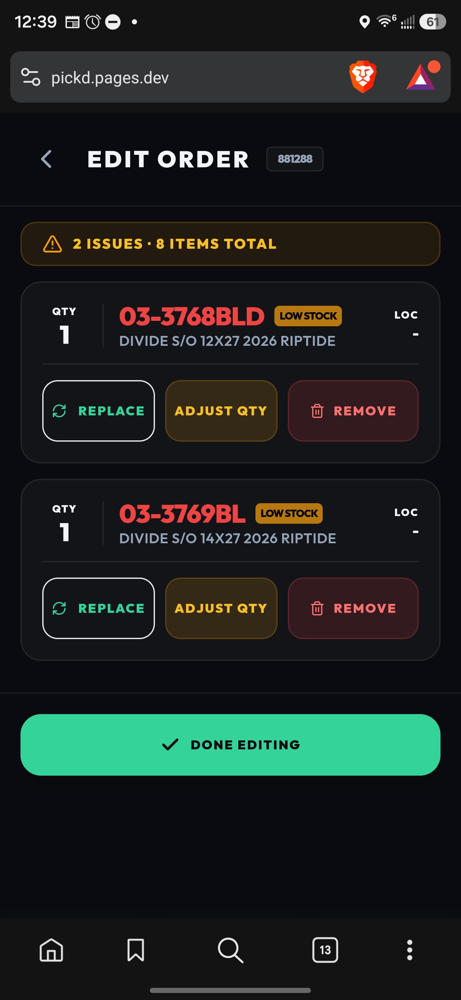

Wednesday, August 26, 2026 · for everyone on the Ludlow floor
The short version
1. Orders no longer say LOW STOCK for a bike that is sitting on the shelf under its "other" name.
2. Registering a new SKU from Double Check now clears the red badge right away — and it never offers to register the same SKU twice.
3. Every SKU now has one way to be written: the AS400 way, with the zero (01-0530). You can keep typing it short — the app finds it and saves it right.
4. Double Check now handles a LOW STOCK line by itself: it swaps the bike when it can, and when it can't it tells you exactly what it found and gives you the buttons right there — no Edit Order needed.

AS400 always writes the number with four digits: 01 0288. Over time we ended up with three spellings of the same thing — 01-0288, 01-288, 010288 — and the same part could be counted under two of them. From today the system saves every SKU the AS400 way, no matter how it is typed:
| You type | PickD saves | |
|---|---|---|
| 01-530 | 01-0530 | zero added |
| 033768BLD | 03-3768BLD | dash added |
| 03 3768 BLD | 03-3768BLD | spaces become the dash |
| 700106BK | 70-0106BK | dash added |
| PKD-252HEX · 792282670112 · Y22B010415 | unchanged | internal codes, barcodes and serial numbers stay as they are |
Searching works the same way: type 31-75 and you get 31-0075. Today 108 existing names were corrected, and the full history of each one moved with it — nothing was lost. Twenty-two of them were the same part filed under two names; those two counts are now under one name. The shelves did not change. That is the list on the next page.
| What the note says | What it means | Buttons you get |
|---|---|---|
| Swapped from 03-3768BLD — same bike, this name has the stock | Solved on its own | Undo |
| Only 2 available of 5 — ROW 43 (2) | There is some, not enough | Take 2 · Replace · Remove |
| 3 on the shelf — ROW 41 (3) — but 3 already reserved by 881290 | Units exist but another open order has them | Replace · Remove |
| Registered, but 0 units in any location | Known SKU, nothing on any shelf | Use (closest match) · Replace · Remove |
| Not in PickD — this SKU has no catalog entry | Nobody has registered it yet | Register · Replace · Remove |
Every button asks for a reason, same as Edit Order, and writes the same note on the order. "Replace" opens Edit Order already on the search for that line.
"Old name" no longer exists in PickD; both counts now live under "Name now". Most of these came in with the original inventory list back in March already under both names, and none has ever appeared on an AS400 order — which is why nobody caught it until now. Confirm each pair is the same part.
| Old name | Name now | Where it is counted now (units) | Description in PickD |
|---|---|---|---|
| 01-077 | 01-0077 | ROW 20 (1) | Hudson 17" Gloss Black |
| 01-145 | 01-0145 | ROW 20 (1) | Hudson St 14" Blue Lagoon |
| 01-288 | 01-0288 | — (0 units) | Explorer A1 ST 16" Teal |
| 01-293 | 01-0293 | ROW 20 (1) | Hudson St 14" Sugar Grape |
| 01-429 | 01-0429 | ROW 20 (1) | Hudson St 14" Vanilla Mint |
| 01-513 | 01-0513 | SD (1) | Explorer A2 19" Gloss Black |
| 12-850 | 12-0850 | D3 (99), D9 (22) | JRP pivot S-stay Dakar XCR 07-08 |
| 128338BK | 12-8338BK | H19 (22) | Taxi part chainguard 2019+ |
| 23-400BK | 23-0400BK | E14 (120), D1 (33), E3 (27) | Stem ATB cromo 1x40x115mm w/ hole, black |
| 23-400SL | 23-0400SL | E14 (150), E9 (10) | Stem ATB cromo 1x40x115mm, silver |
| 23-404 | 23-0404 | D6 (840), E14 (60) | Stem w/o logo 22.3mm black |
| 29-200 | 29-0200 | E76 (300), D21 (25) | Brake part center-pull cable holder, steel |
| 31-75 | 31-0075 | E71 (1350), E81 (900) | White cable / brake cable inner-outer front — two different descriptions, please check |
| 31-250BL | 31-0250BL | E71 (16), E76 (16) | Violet bicycle cables |
| 36-305 | 36-0305 | D26 (95) | Brake Changstar drum band 12 white — both counts were in D26, now one row of 95 |
| 650022 | 65-0022 | FDX STATION (40) | JRP hanger Renegade S3/S4 (1.5) |
| 66-109BK | 66-0109BK | D11 (100), D16 (100), D17 (100), E16 (96), E20 (96) | Cyclerite stem BK |
| 66-110BK | 66-0110BK | E11 (514), D11 (65), D16 (65), D17 (65) | Cyclerite stem black |
| 66-110SL | 66-0110SL | E12 (132), E20 (131), D11 (35), D16 (35), D17 (35) | Cyclerite stem SL |
| 66-377SL | 66-0377SL | E47 (79) | Cyclerite 1/2 DX style pedal — both counts were in E47, now one row of 79 |
| 66-517 | 66-0517 | E20 (22), D1 (15) | Cyclerite 4-bolt stem |
| 66-525 | 66-0525 | D11 (100), E9 (8) | Stem Cyclerite threadless 1 1/8 90mm |
PickD · August 26, 2026 · Questions: Rafael